来源：https://o0yvn3o31a.feishu.cn/docx/Wro9dvXTsoRZF9xBSJkcMk0Xnvf
大家好，我是黄岛主！
最近一段是我们工作室在操作小红书虚拟店铺这个项目，整体还是不错的，也做出了一些小小的成绩。对于这个项目而言，当前也算是一个红利期吧，至少比无货源要好做点，而且没啥太大的成本在里面，基本上都是网盘链接自动发货给客户。重点是客户素质高，没什么退款情况发生。所以，我们整理了一份详细的小红书虚拟店铺SOP复盘分享给大家！
但是要注意，我们做的这个项目是需要自己选品的，而且文章里我也会教大家怎么去选品和测品，如果你感兴趣完全可以操作下这个项目，我觉得小白入门做这个还是不错的。当然，还有一点就是这个项目周期会长一点，你需要用执行力狠狠的坚持一个月，前期会看到效果，但都是后续的积累才能高额变现哈！
简单看下我们小红书做的店铺变现情况：
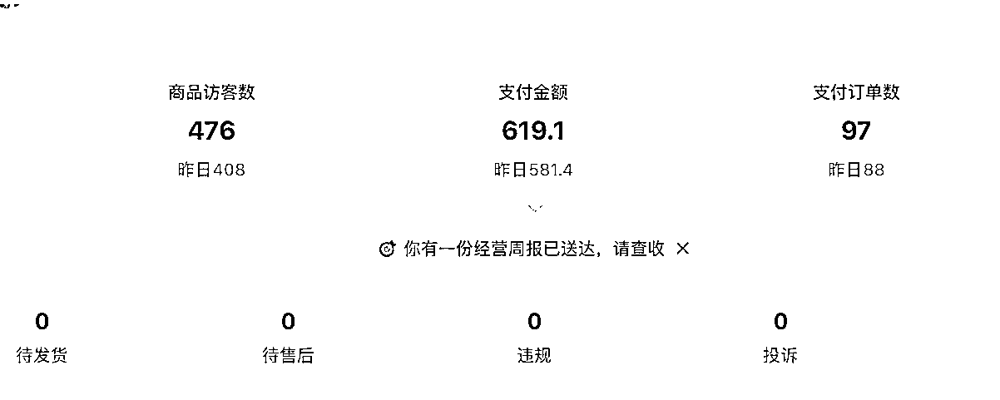
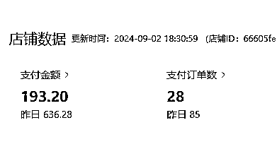
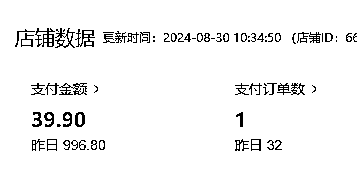
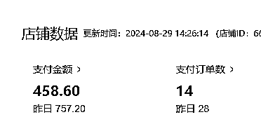
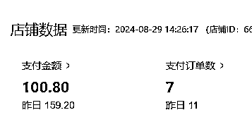
我们做的是高客单价，店铺变现数据有高有低，但是整体变现情况还是不错的。说真的，小红书虚拟店铺适合做高客单价，如果一个品爆了，或者后期长尾词铺的多了，基本上不愁流量和出单。尤其是长尾词的铺垫笔记，如果执行力给力，全靠长尾词也能每天躺赚哈！
如果你对这个项目感兴趣，看完就可以操作哈，不懂的地方也可以多跟我交流！
下面我给大家具体讲下小红书虚拟店铺项目的玩法：
我们可以注册1-2个小红书账号，可以的话 2-3个号去发笔记测品，后期肯定越多越好！
有几个细节注意看下：
1、一个实名只能用于一个账号的店铺开通，前期建议先起号，在去绑实名开店铺，不然账号没起来，浪费了实名名额，而且即使你注销了，也要一定的公示时间！
2、如果你有成本，可以开蓝V的专业号，这个是可以搞出两个店铺哈，成本600一个。但是你前期没必要，先用个人号跑通再说。
3、前期穷人模式去跑，可以准备2-3个或者更多的小红书未实名账号，这个只发笔记，有了人咨询之后，私信转发店铺号上的产品给粉丝，然后转化变现！
总结下：店铺可以用个人身份证去开，但前期不开。前期我们需要注册多个非实名的小红书账号，然后用赛马模式去发笔记，去看哪个账号能跑起来。跑起来的那个账号可以正常实名开店，然后在拖着几个非实名的小号去做。当然没，如果你财力，可以开专业号，这个是600认证的！
注册账号方面：
1、我是建议大家新开账号，新号可以节省很多不必要的烦恼
2、或者把老账号换绑变成新账号，不要用发过其他内容的老账号来做这个项目。
关于换绑：淘宝找小红书换绑渠道，把账号释放出来，重新注册新的小红书号，就行了！
这里说下为什么用新号？
第一点：老账号如果长期发一个领域的内容，标签已经定死了，换个赛道不容易热门
第二点：你的老账号可能长期没发布，账号权重流失严重，再发就不热门了
第三点：小红书对新号特别友好，我们目前操作的小红书项目基本上都是新号操作
所以：空白新号，你从0-1去做会更顺畅，不会有那么多的烦心事
总结：如果你现在手里的小红书号 是发过笔记的，或者你的老号不想用了，可以换绑变成新号！
这里有个细节点要注意：关于已经开店注销的细节，都记得看下哈！！！
如果你的账号实名开店了，请不要随便注销，因为注销之后会很麻烦，需要等公示期，导致时间成本增加！就怕谁突然给注销了，不知道怎么处理！
如果店铺关店以后，小红书账号注销了，且手机号实名信息就释放出来了，是可以再重新开店的。
店铺的账号注销后什么时候可以注册？这里看下：原店铺出单的要公示30天，没出单的7-15天，大概这样。然后公示期结束后，即可再去注册店铺。所以，不要随便注销店铺！只要账号没问题，可以重新养号测试
一定要注意：由于我们现在很多孵化者有一些是开店了，不要轻易注销，可以隐藏已经发过的笔记，然后跟着后续的养号，然后进行发布笔记测试，看看数据如何，然后我们在群里交流！
这里有个细节要注意：如果你以前开店的账号找不到了，可以打开小红书，不要登录，点击右上角帮助，找回账号，通过实名认证信息确认。然后提示下面这张图的内容，然后你绑定新手机号或者用原来手机号直接登陆。
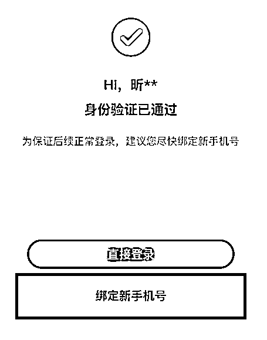
说下设备的建议：大如果你有设备直接用，苹果我们推荐7P以上设备；安卓的无所谓（华为的mate30效果不错）
关于新旧手机的建议：这个大家应该会遇到
如果你的手机是10年前的旧手机不建议用，最好是最近3-5年的手机，根据我们以往经验，旧手机的流量极差，越新的手机越热门程度大，所以我们很多都是赚了钱在投资新手机。
如果你的设备都做过小红书其他行业的项目了，例如带货等，建议对设备做下处理：
1、安卓的需要恢复出厂设置 即可
2、苹果的话建议手机用爱思助手（https://www.i4.cn/）深度刷机，刷完机，注册新id，然后用苹果id去注册小红书账号
看这个步骤：
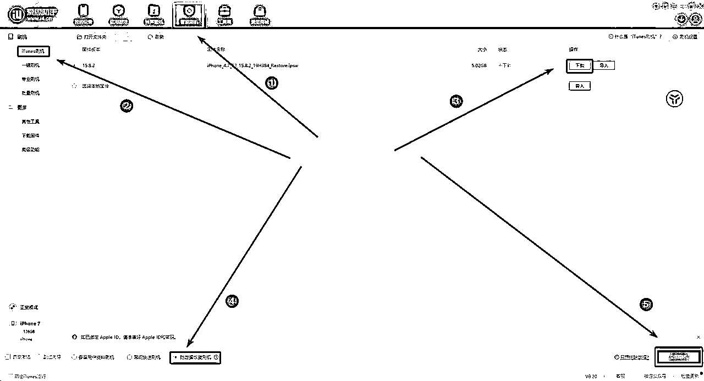
细节备注：不同的安卓设备或不同品牌的设备，恢复出厂是不一样的。但苹果的基本上是一样的刷机操作，因为苹果就一个牌子！
推荐用实名注册的厅卡，比如移动、电信、联通等手机卡
但是不要用虚拟卡、接码的号、物联卡等。这类卡基本上没啥用！
注册小红书，要一机一卡一号，且要在4G/5G环境下注册
其实也可以在无线网下注册，别过多注册就行了，最多支持三个账号的注册和登录。
上述看完，可以安排注册了，看下注册流程
1、手机里下载小红书APP
2、选择手机号登录
3、输入手机号，获取验证码，勾选已阅读并同意
4、然后点击登录
5、注册完，不用实名，后期账号做起来了在实名
这里注意了：我们可以先不改头像和资料，可以放到养号结束后 改！
1、小红书昵称和小红书号、以及小红书头像，随便填写即可
注意细节：小红书昵称会跟店铺同步，如果后期注册店铺了，可以起个好点的或者后面在修改
或者：先不用修改小红书名字，也不写简介，可以发了3篇笔记后，再改名字和写简介！
2：选择 男/女 ，选个女的就行
3：选择兴趣爱好 ，这个可以随便选择
4：生日选择大概1个月内的。因为小红书生日当天会发一张生日流量券，有效期半个月，这个到时候有利于发笔记的时候使用！
5：登录后，放着别动了。
6：手机的通讯录，最好添加10个认识人的手机号
我们打开APP之后，会默认发现好友，这个是模拟正常用户注册哈，如果本来有就不要考虑这个。（APP允许访问通讯录就可以）（手机设置里设置允许访问通讯录）
一个网线，可以带3-4个店铺，用元桌浏览器登陆隔开IP，是没问题的！
如果你放大，就正常开店就行，前期基本上都是一个店铺测试！
开店地址
这个链接是直达的，https://customer.xiaohongshu.com/login?service=https://ark.xiaohongshu.com/
打开之后，手机号登录 选择个人入驻即可
开店建议
我们可以开个人店或个体店，前期先个人店铺
保证金建议
保证金是1000，但是这个可以先不交
不交的情况是：不能提现，但是我们可以等提现的时候交保证金
1、打开开店直达的网址，打开之后，手机号登录 选择个人入驻
https://customer.xiaohongshu.com/login?service=https://ark.xiaohongshu.com/

2、选择个人身份入，点击立即入驻
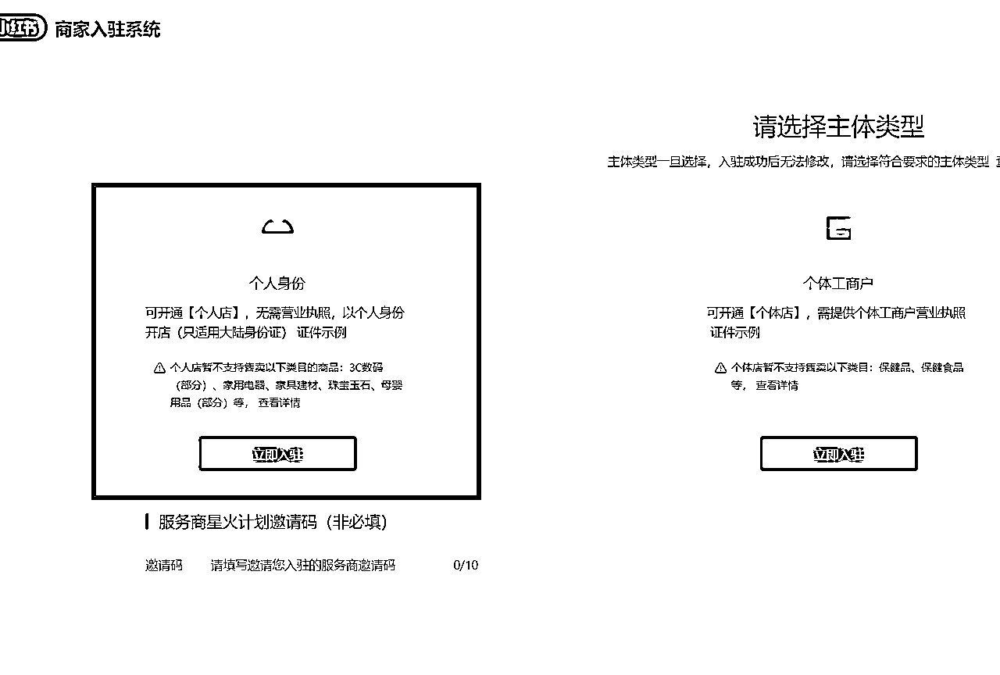
3、填写相关资料和刷脸
这里要注意：
第1点：昵称 会匹配小红书的昵称，如果和其他昵称一样，会提示让你更改，这个时候你改小红书的昵称，然后退登后在重新填写资料确认下一步
第2点：会让你选类目，这个时候选择我们给的虚拟类目：
[艺术潮玩、艺术品及周边、艺术定制、虚拟定制]
如果你的品放的这类目，老是提示不通过并让整改，可以从图片和标题上进行修改下！
其实说白了，就是挂羊头卖狗肉：主图和详情图可以随便找了个不相干的图，然后标题也尽可能的不一样
比如标题，卖的是英语资料，标题不指出是什么，但告诉大家的是：店铺通票持续更新的音频和PDF
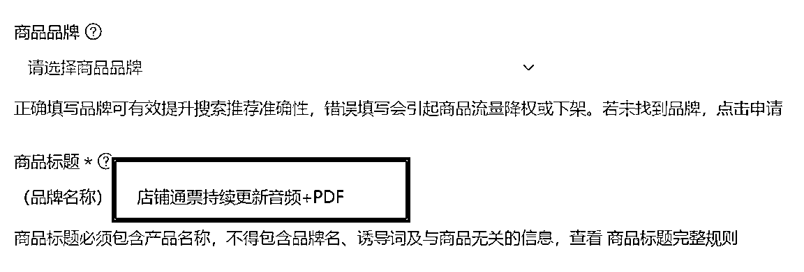
比如主图和详情图，没有具体的详情展示，而是告诉大家模板过多，但没指出是什么模板
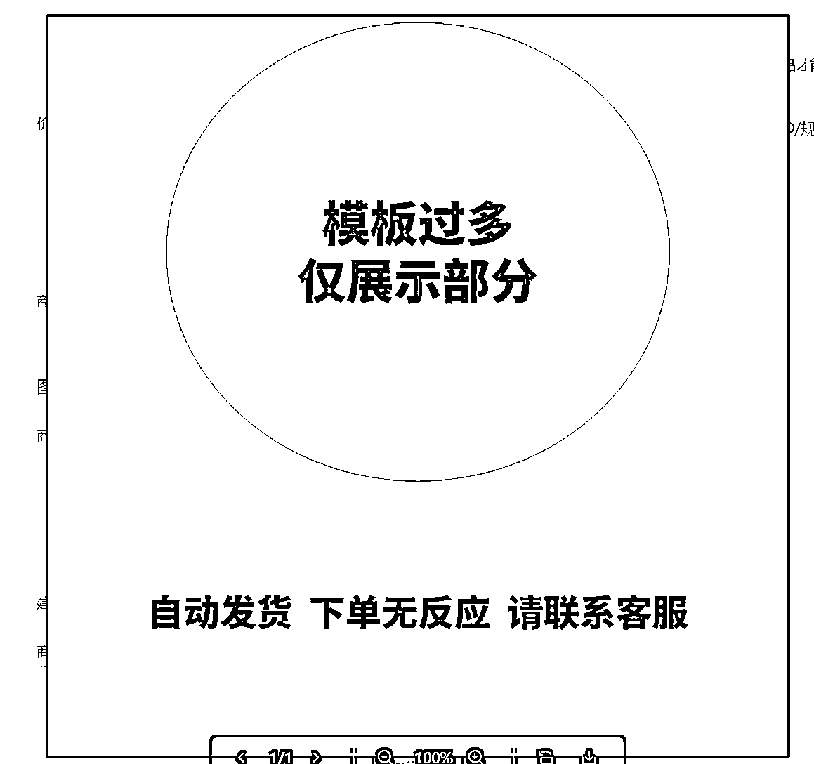
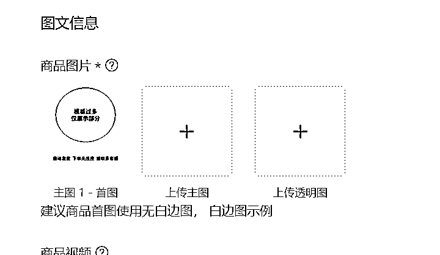
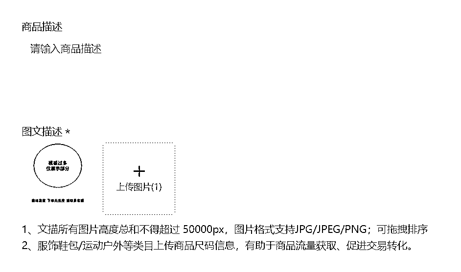
但是这种有个缺点：商品没搜索流量了，只能通过笔记去推商品！
第3点：这两个必须完成的资料要填写好【地址设置】、【店铺信息完成】：
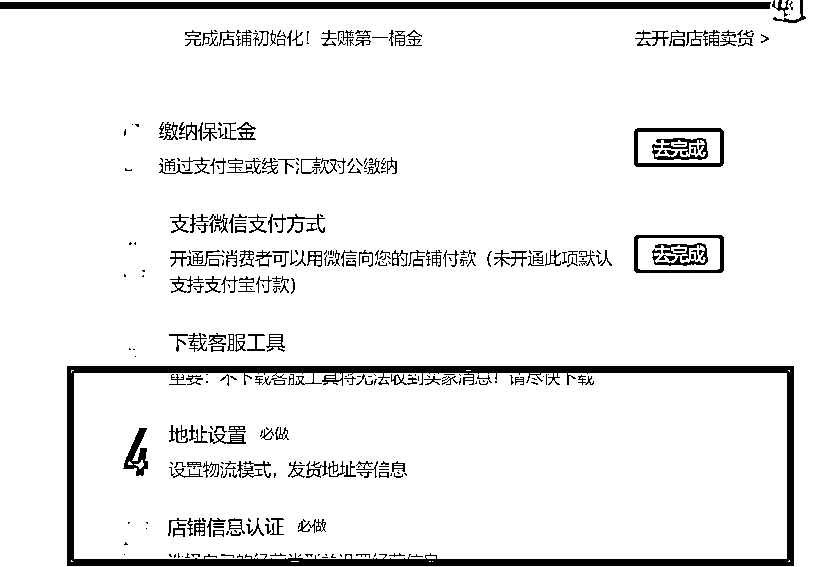
第4点：经营类型，这个，勾选类型3或类型4都可以，任选一：

第5点：物流模版 里的地址可以填写真实的，但不是你的地址：
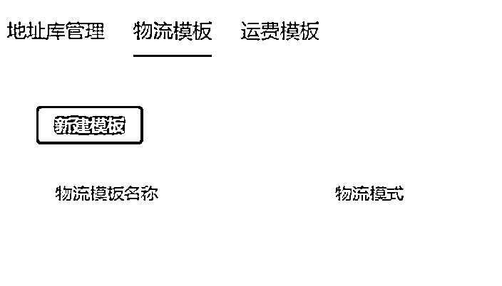
4、最后填写完成，会提示你审核中，然后没一分钟就审核完善，刷新下 可以进到后台
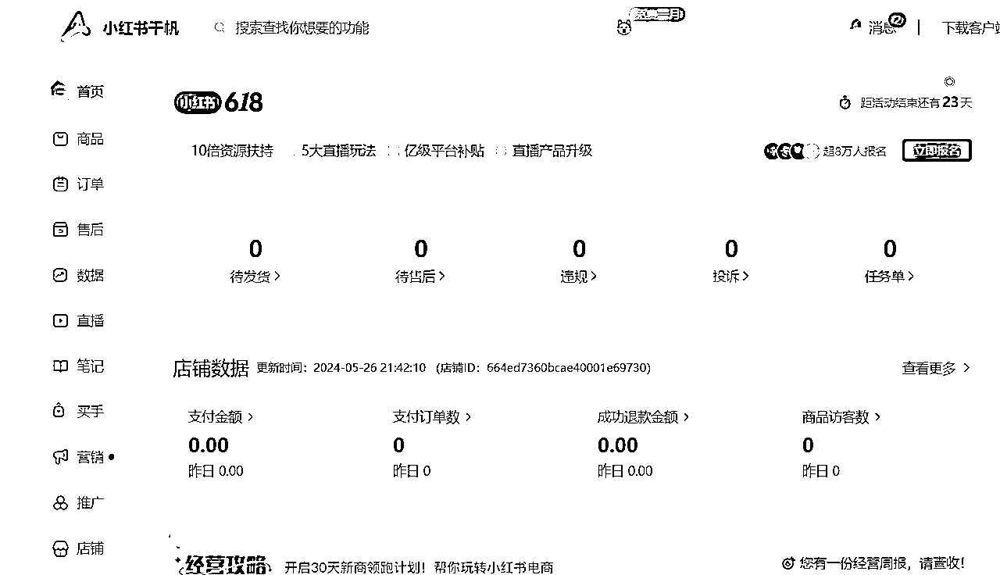
5、绑定下银行卡和微信或支付宝收款
先绑定银行卡，才能申请微信支付，审核过才能用
银行卡直达链接：https://ark.xiaohongshu.com/app-merchant/card-manage/home
微信开通直达链接：https://ark.xiaohongshu.com/app-merchant/third-settle/regist/wechat/apply
支付宝开通直达链接：https://ark.xiaohongshu.com/app-merchant/third-settle/regist/alipay/apply
注意，主营类目 ，填写默认的 零售批发 就行了

绑卡的时候这个选择短信验证：

其他的也没啥，然后就开好了，很简单没啥难度的，就是比淘宝复杂点！

小红书要做精细化选品，垂直一个行业或一个产品去做，一个品正常开单了，做起来了就持续做！如果一个品发了半个月都不出单，然后再继续选下一个品，不要一上来就大批量的上品测品，要一个个的选品测品，或者多个店铺不同的品去测品！
切记：不要做大杂烩，不然你笔记都不知道怎么发，发杂了就没流量了哈！
词根包含：教程、视频、资料、PPT等，这个要自己拓展，我送大家一份
赠送其他的长尾词，方便选品：
小红书长尾词整理，方便选品：链接：https://pan.baidu.com/s/1biajIY-AgccZ90ik8PZSOQ?pwd=3mot
提取码：3mot
注意：用词根可以分析出各种各样的虚拟产品，方便我们在淘宝上搜索选品！
选品分类这块看下，分为：时效性选品、稳定长期的选品，这两块！
什么是时效性选品：比如家长会，有段时间开家长会，卖家长会PPT的就非常吃香，再比如儿童节的PPT，再比如时事热点类的都可以做。
什么是稳定长期的选品：比如模版、资料、材料、视频教程、软件工具等方面的！比如合同资料，这个大家都是长期用的，不会因为时效性而过期没人买！
核心一点：选资料类的去测品
所有，总结上述，我们可以从这些方面去入局选品！
目前事实类PPT模版、协议模版、合同模版、软件等等，这些卖的还是不错的！
方向这块，还是要多看哈，多看才能选出更多信息差的虚拟产品哈！
细节：淘宝搜出来品后 发现还可以的，去看小红书数据如何，数据好 直接先测，先跑经验，不要纠结选什么品好，先搞一个积累经验再说！
淘宝搜索词根：教程，筛选销量从高到低
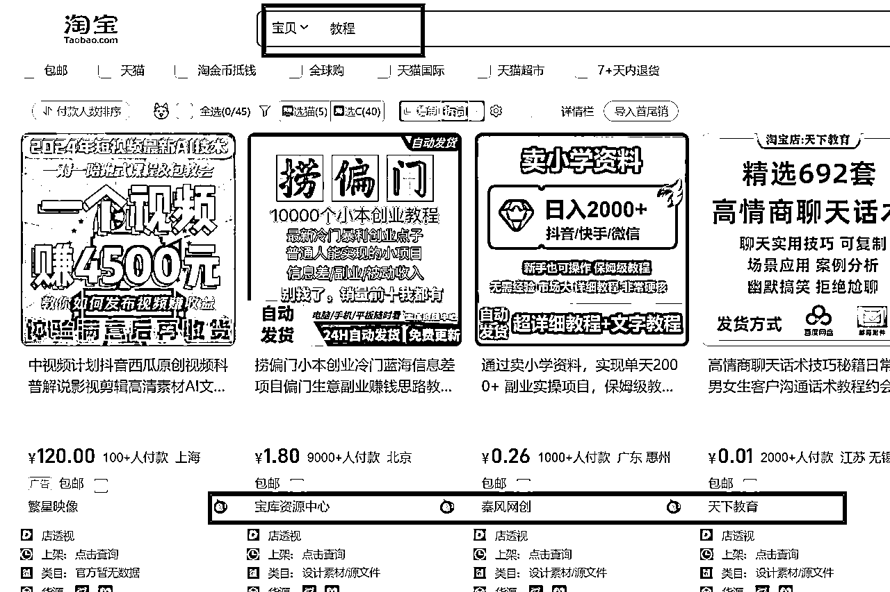
到人家店铺里，找到销量前十或者不错的产品，比如天下教育 这个店铺
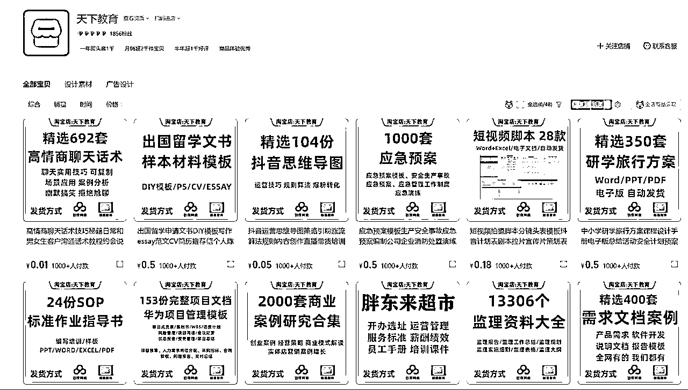
你看下销量不错的几个品，不用在意价格，到了小红书都是信息差，小红书可以提高价格去卖！
比如出国留学这个品，我们可以拿去小红书分析
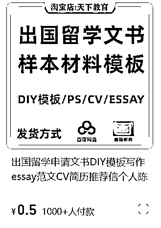
如上图选的品，你可以到小红书里，先看下店铺有没有人卖，卖的价格是多少，销量是多少，如果销量50个都不到的话，那基本上不考虑
我们分析数据的指标：
1、小红书笔记有人正在发，有热门笔记，评论区有求分享，而且是最近几天内的
2、店铺有15-20个同行最佳，不超过20个，不然就竞争很激烈了
3、这个品有人卖，销量至少50-100+以上，低于50个销量不考虑哈
我们下面举例子：
比如这个出国留学申请书，相对同行较多，而且这个可以溢价的，就是可以代写和模版两个不同的价格去卖。但是不建议去做了，同行有点多！
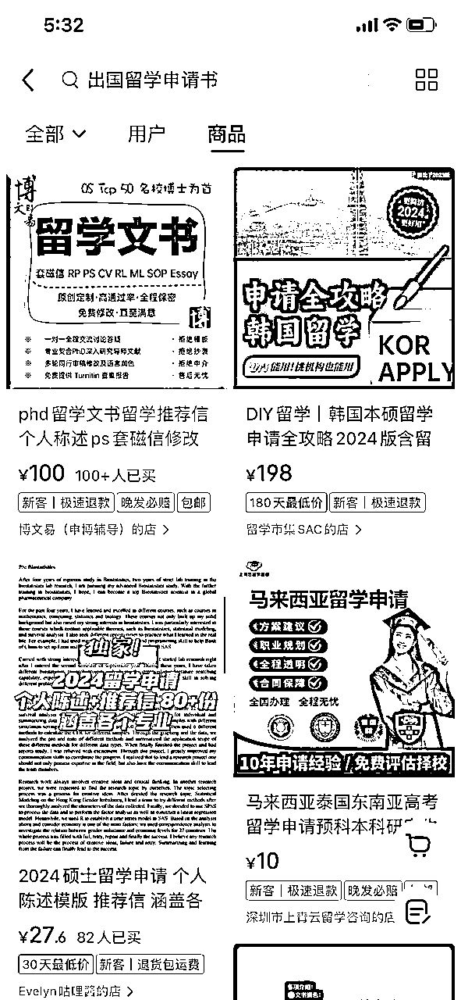
再比如这个产品：应急预案
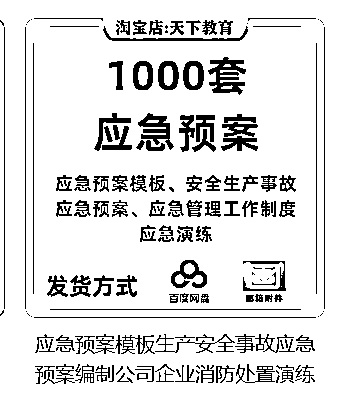
笔记最近是有人发的：
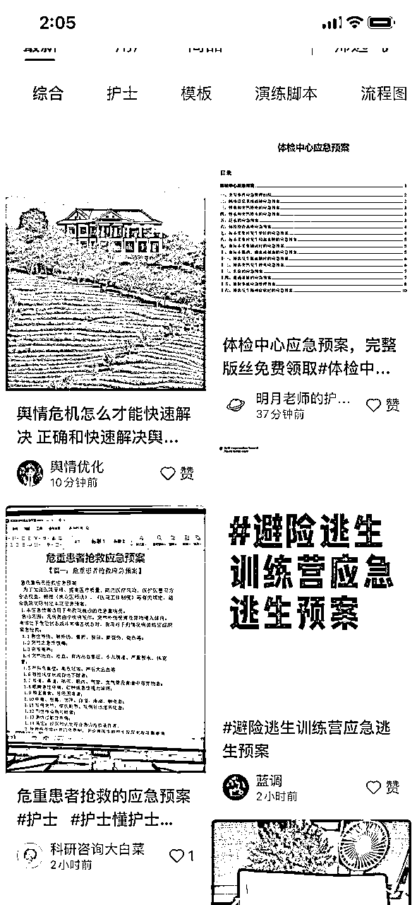
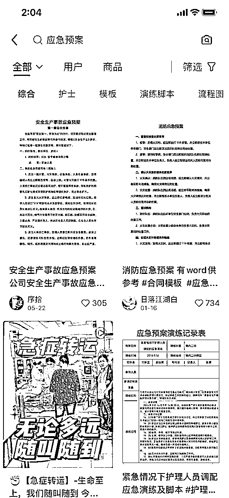
商品的销量也还不错的，同行也少：
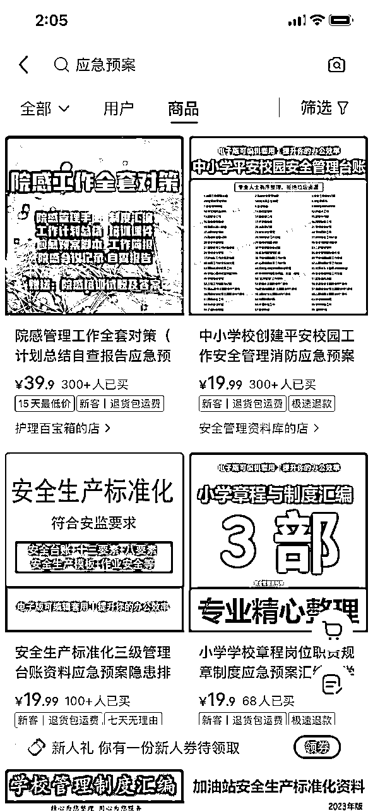

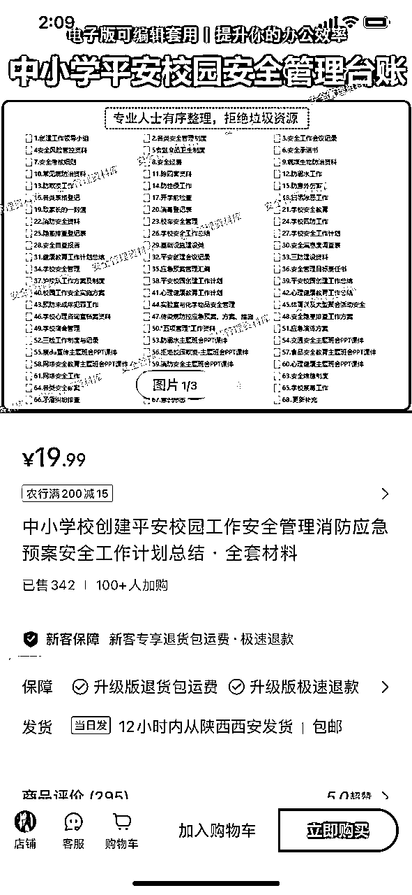
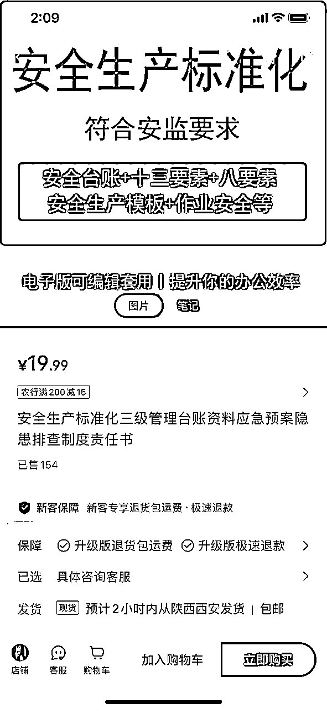
说明这个品还不错，可以去测试！然后等待上品备用测品！
基本上目前没什么风险规避，只要不做带人名的、课程名字的、S情的、不搬运人家的原创的图片就行了。
类目建议
类目我们选择：艺术潮玩、艺术品及周边、艺术定制、虚拟定制
上架方式
这里我们采取手动上架哈，因为手动上架我觉得比搬运更好一些！
图片制作
这里先把产品的主图制作好，方便我们后期用到哈！
主图尺寸800*800，详情图尺寸800*不限制，基本上跟淘宝一样，如果你做过淘宝，这个很容易操作！
第一种方式，自己做
自己做，就是正常跟淘宝一样了，做主图套图即可
第二种方式，用哈士奇插件下载小红书或者淘宝上的同行图片，一般淘宝的都是1:1的图片
这是哈士奇安装地址：https://hsq.dangxun.com/安装浏览器就行了
淘宝下载演示：

小红书店铺的主图，需要从手机端转发到微信，然后微信里打开链接，然后用哈士奇下载


详情图制作
跟主图下载方式是一样的哈，下载下来只要没水印，就直接用就行。
如果主图和详情图片做好了，就可以看下面的上传步骤了
后台直达地址：https://ark.xiaohongshu.com/app-system/home?from=ark-login
具体上传步骤如下：（我以软件工具产品为主，演练上架步骤）
1、左侧找到商品，点击发布商品

2、填写标题，30个字符，可以淘宝、拼多多、小红书等店铺内复制人家的标题，别带违规词，具体违规词我在整理出来。
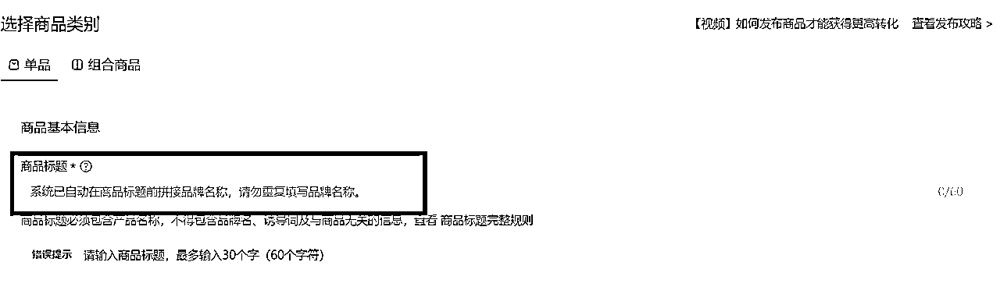
3、上传主图，这个需要1:1或者3:4的主图
点击上传图片，先进到图片空间，创建主图和详情图的文件夹，这样分类好，不会很乱

然后点击上传图片，然后选择图片即可上传
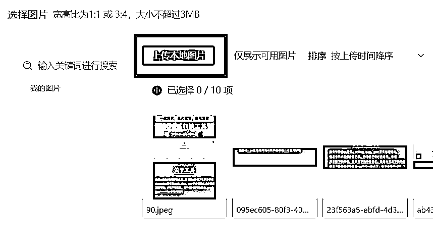
图片不要超过3M哈

4、以上的，我操作了个完整，来看下，这里我换了个工具演示

填写信息
注意了：没 红星的 不要填写 只填写带红星的属性
1、标题第一步的时候自动填写好了，不需要动了

2、其他属性，看图设置，跟这个一样就行了
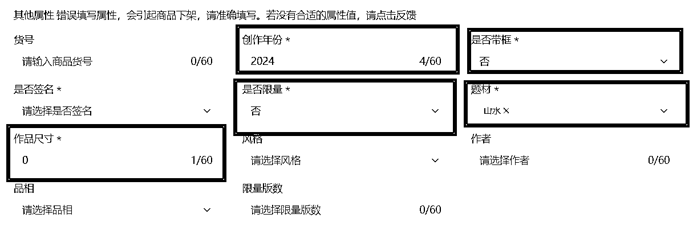
3、价格填写
这个价格填写，可以按照对标的价格设置，如果对标有打折价格，可以先按照打折价格设置（就是按照对方打折后的价格填写我们的一口价）
价格可以阶梯的测试涨价：一开始1.98，出单不错，可以涨价3.98，出单还想，在涨价5.98，持续提升价格，直到出不动，在改回能出动的那个价格
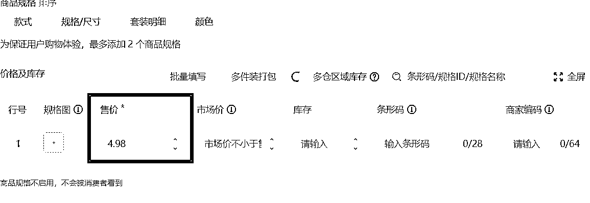
这个位置也是设置SKU的，点击批量填写：
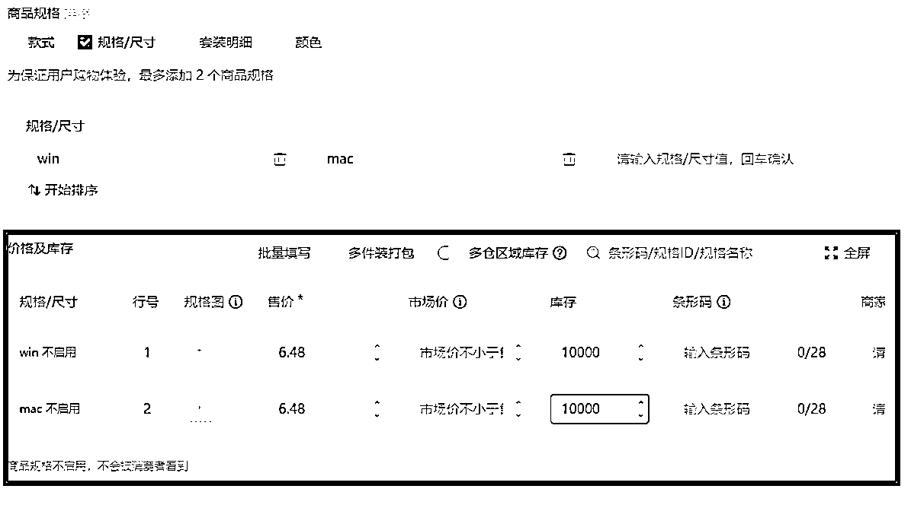
4、上传主图，默认是7张，可以全上完，也可以五张，这个可以套图上传，也可以把产品图截图上传，自己编辑好

5、详情图上传，可以套图上传，也可以把产品图截图上传
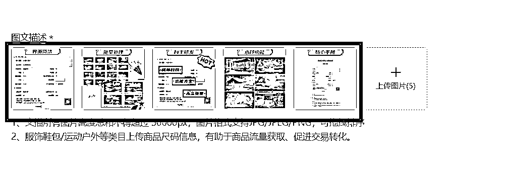
6、服务信息设置
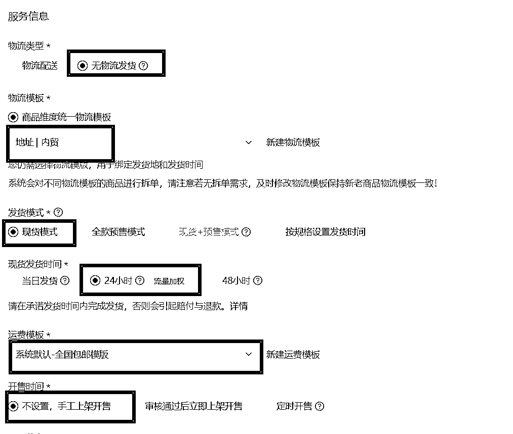
强调下：把这些设置好，因为是虚拟，一定要选无物流发货，开店的时候会涉及到模板，去怎么设置物流模板，是否预售，非预售，发货时间选24小时，系统默认非偏远地区包邮模板，要选成全国包邮模板，开售时间选直接上架，选手工上架都可以，支持七天无理由退货不要选。
7、然后点击提交商品

8、等待审核产品就行了
注意事项
1、如果你是做软件的，标题和图片里不要带【软件】2个字，如果你做的PPT，标题后面要带定制等字样。这个到时候会出现各种原因，如果有圈友做了，到时候出现了在交流。其他标题的关键词正常放，遇到问题在交流。
2、哈士奇下载出的主图和详情图可以直接用，但是不要带人家的水印，可以去水印（直接套进美图秀秀里消除笔就可以）或者水印多的话可以自己制作模仿
强调：如果直接复制淘宝商家的主图详情，一定要看看有没有水印，你有水印就不用，审核一遍没水再用。
到此，上架完成，我们再看下一步的操作！
素材是最重要的，爆款的笔记是看客户需要什么，要把时间花在这里，也就是花在了刀刃上！
细节：每个赛道的素材都是不一样的，这个要注意了，根据实际情况进行交流！
我们以考试资料举例子：一般考生喜欢的关键词，学霸笔记，重点考点笔记，考前狂背，押题，密押，考点总结，知识点总结等等这种词，最能引起考试的注意，也最容易点击引流。可以参考做的好的同行。
下面以银行从业考前狂背为例：
素材的来源方式很多，淘宝、拼多多、百度文库、小红书同行等等方式，这个方法是统一操作的哈，都是买来然后拿素材直接做图的。
关于进货成本说明下：可以拼多多去买最低价的，这样成本不是太多。但如果你觉得1块 亏成本 可以 多多买完 在申请退款就行了。
注意细节：这些买来的素材，都是我们以后用到的，切记一点，千万不要搬运！
那么确定好了赛道产品，就可以针对性的找素材了，实在找不到，找到相似的，例如找不到考前狂背，那么可以找重点笔记，押题，密押也一样。


比如这是找到的素材：
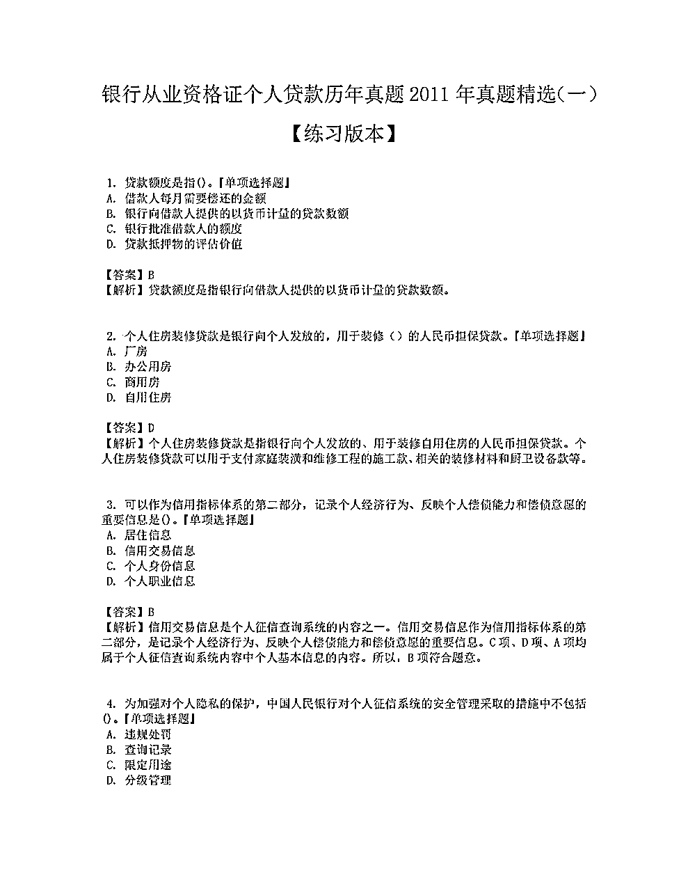
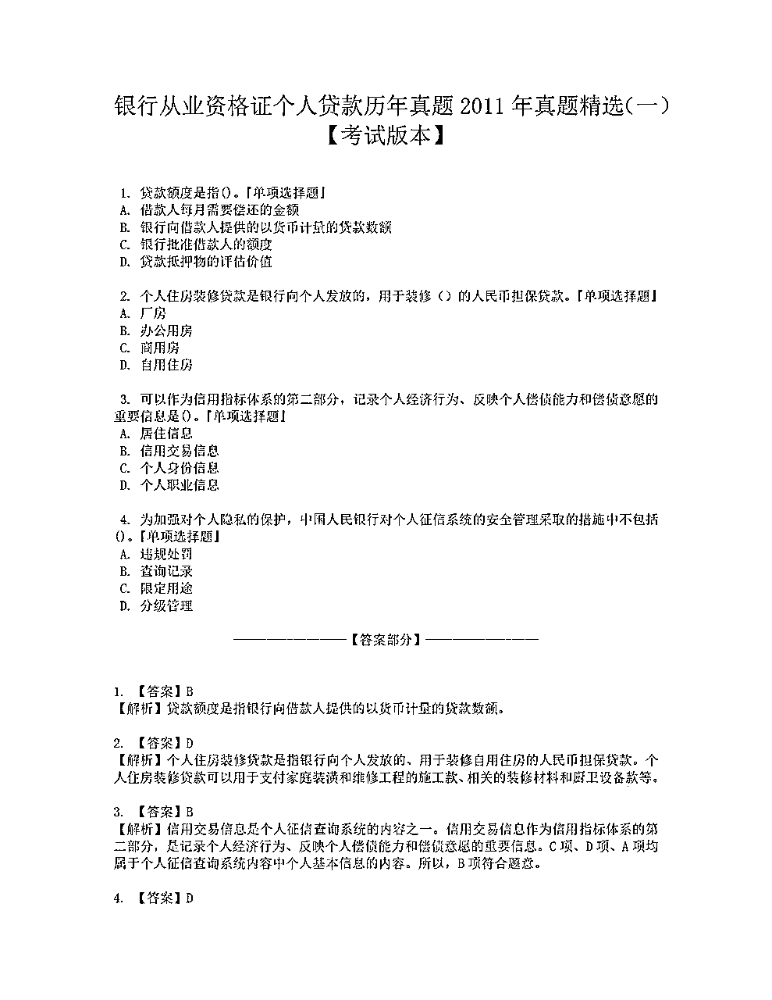
这只是考题的一个案例，其他的一样的道理，一样的操作玩法哈！
比如：你做大学生创业计划，可以找最低价格的去买就行，买来我们就可以做笔记图片！
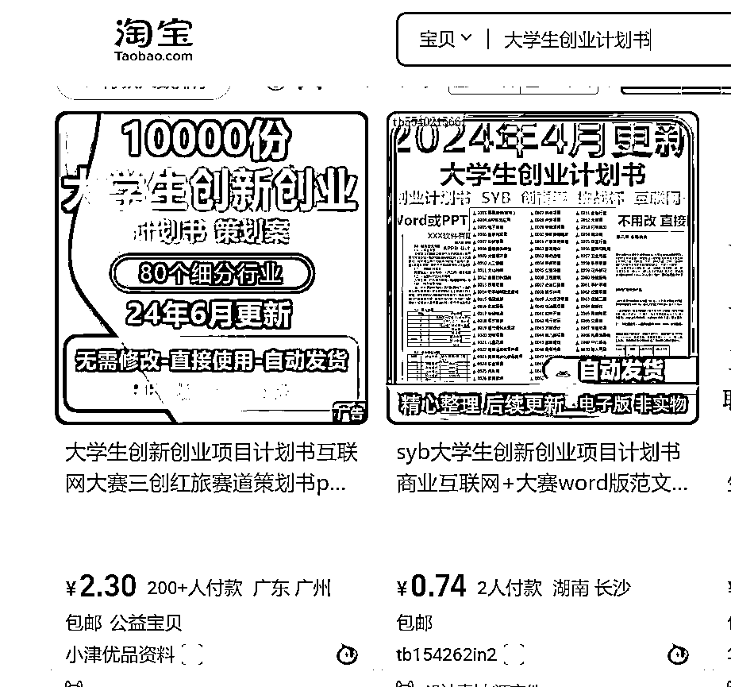
再比如我们这边的合同模版：这些都资料都是淘宝买的，除非你用文心一言生成，但不一定全面！
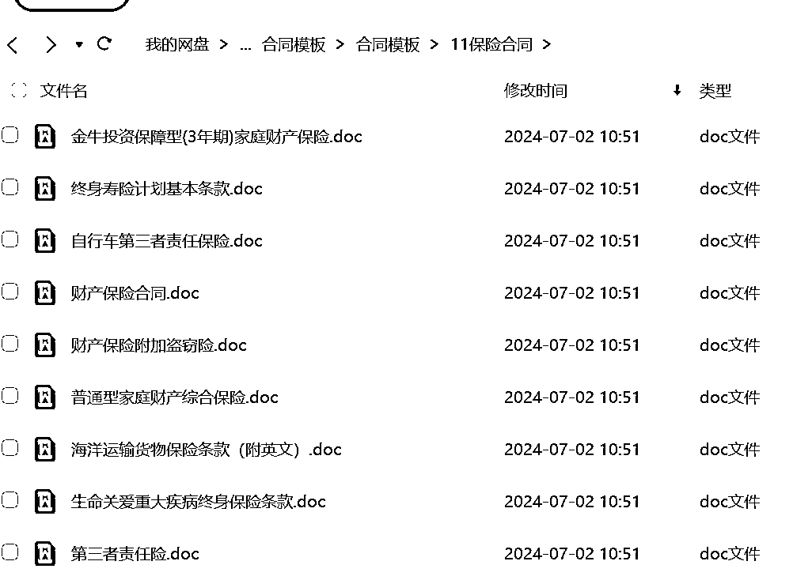
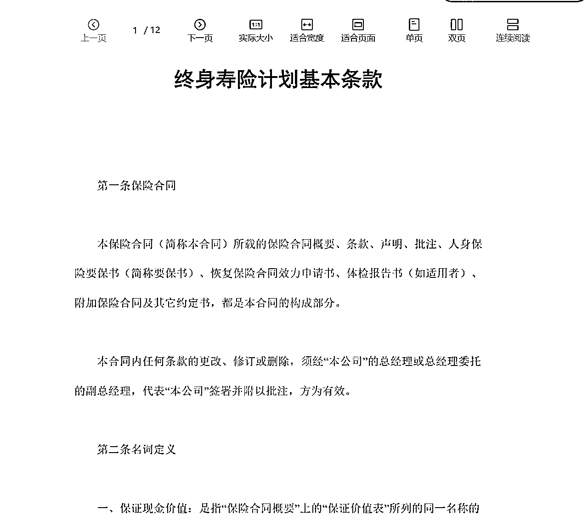
分享点卖来的素材给大家看看：链接：https://pan.baidu.com/s/1S3IzDul_2urfNtuIZcywEA?pwd=n7lp
提取码：n7lp
--来自百度网盘超级会员V9的分享
我们分为两种，第一种是截图后加相关水印做成图片、第二种是打印出来然后手机拍照，直接原创图使用
先看下第一种操作：
1、素材转成图片
找好素材后，用截图的方式，保存成图片，截图很简单，用电脑版微信，或者QQ都可以。
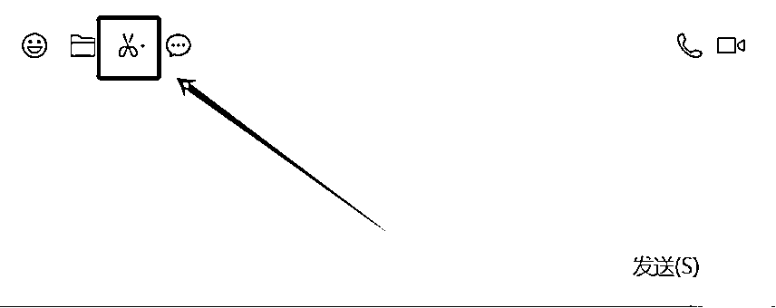
电脑版微信的聊天框有一个剪刀的按钮，可以截图保存成图片。
这里需要注意，截图的时候，尽量保持尺寸接近，方便后边使用这些素材图片。
2、图片加贴纸
下方文件夹是我找好的素材，我的这篇笔记围绕考前狂背展开。

很简单，就5张图，一般3-7张图就够了，不用太多。
下面我们要把图上面加贴纸文字，需要在电脑上操作，用美图秀秀即可，软件在下面链接，自行下载。
链接：https://pan.baidu.com/s/161F6zLKra9PnjWWdxGSEbg?pwd=hol8
提取码：hol8
注意：这个根据情况来看，如果你想用稿定、创可贴、PS等工具都可以，哪个利于自己的用哪个，但作图方法基本上都是一样的！
五、笔记图片、内容详细操作
先看下图片的制作，资料类的基本上都一样的，都是加水印处理，其他赛道要具体在看，但是我们现在可以先从资料最基础的去学习，后续遇到不同的赛道，在跟黄岛主交流怎么作图！
还有一点，要学会分析对标图片，我下面是举得考题案例，是我们分析了同行，基本上同行都是这么加的水印去作图的，但是很多其他赛道的资料不是，比如小学资料等，你们要多去分析对标账号，看看人家怎么处理的图片！
作图的详细步骤如下：
1、 打开软件，载入图片
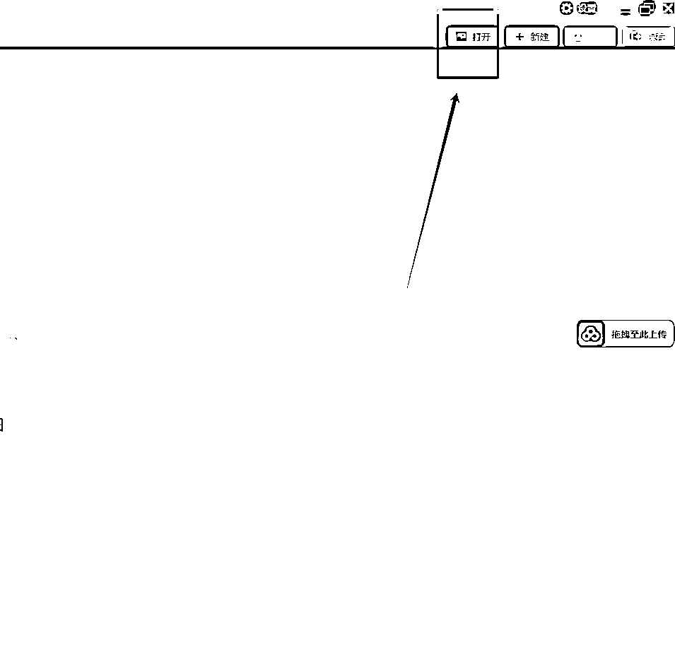
2、图片载入之后，会显示在软件中间位置

3、点击文字水印
输入文字、会话气泡、水印、漫画文字、文字贴纸都可以用，按自己喜欢的来就可以，但有的贴纸是VIP才可以用的，不用办VIP，免费的足够用了。

4、这里就是一个熟能生巧的过程，刚开始，每个贴纸都点一下看什么样子，后面熟悉之后，2分钟左右一张图，下图就是我刚刚做的。
注意，图里面的文案内容，一定要有噱头，可以参考同行的文案。

5、这个图文一共是5张图，其中第1张把噱头的文案都写上，后面的4张，简单写一写就可以，因为在搜索列表页面，看到的是第1张图。
做好之后，点击右上角保存

这里一定选jpg，高画质，然后保存。

6、下图就是我刚刚做好的5张图片

来看下第二种：
拿到资料直接打印出来，就是废墨而已，其他没啥！这个打印出来摆个角度直接拍照就行了，直接原创输出，当然你也可以在这个基础上去加水印！毕竟水印能吸引人点击！
如果赛道还不错，可以淘宝找人批量打印，很便宜！当然，最后自己有打印机，买最便宜的墨水去打印，现在打印机也不贵，我用的是小米的打印机。
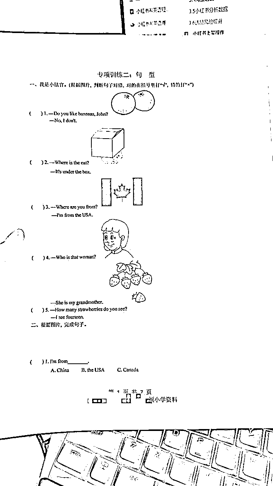
这个多拍几张作为笔记图片，5-7张都是可以的，不同的角度去拍摄就行！
笔记图片，这样就做好了，很简单哈，拼的就是执行力，所以基本上新手看完直接上手操作这个项目了！当然，作图方法有很多种，要多去发现同行对标，看看爆款的图片都是怎么做的！
小红书发布方法很简单了，一天发2-3篇即可！我们以考试资料去做演练！
但是发布是有很多细节要点的，这里我需要跟大家说明下，具体下面看下：
1、我是选择流量还是Wi-Fi？
如果你只有一台手机做小红书，可以用Wi-Fi。如果你做多个小红书账号，一定要用流量发布，我们要保持一个网络环境去做一个账号！
2、发布时间
我们的客户是早上7点到晚上11点活跃，半夜偶尔也会蹦跶出一些人找你的。所以，我们的发布时间尽量是白天发，如果非要晚上发，不要超过9点，9点后就没啥效果了！
3、发布时需要添加音乐或者贴纸吗？
因为小红书发布的时候有显示音乐和贴纸，所以很多人可能会去添加。但我们这里是不需要添加音乐，按照笔记图片顺序一张一张图添加就行，贴纸可以选择添加水印贴纸，无所谓。
4、标题怎么写？
说真的，标题、标签，都是抄同行，没什么太大的写法，主要就是拷贝同行的标题，然后加个表情，或者AI下！

来看下AI标题的一些方法：
我们举个例子，上面的标题，我们用讯飞AI下，可以给出三个标题，这个是讯飞星火免费的，可以百度下，也可以找我要都行！
AI工具：https://xinghuo.xfyun.cn/、https://kimi.moonshot.cn/kimiplus/conpdi8t7lag4rq67pqg 都可以用
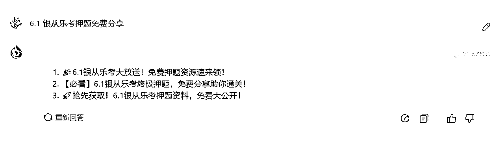
再来看下人工修改的方法：
可以人工去搜集一些爆款的标题，然后把头尾重新拆分组合，形成自己的新标题。
用小学资料举个例子：
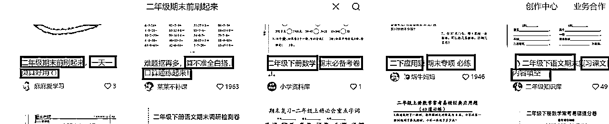
可以看到图片，红蓝搭配，都行的：
二年级期末前刷起来，期末必备考卷🔥
二年级下册数学，一天一页真好用🔥
5、文案怎么写？
文案更简单，也是抄同行修改换表情，也可以AI洗稿都行！

以这个为洗稿案例哈，也是讯飞AI下：

也可以用文心，我觉得文心比讯飞好用：
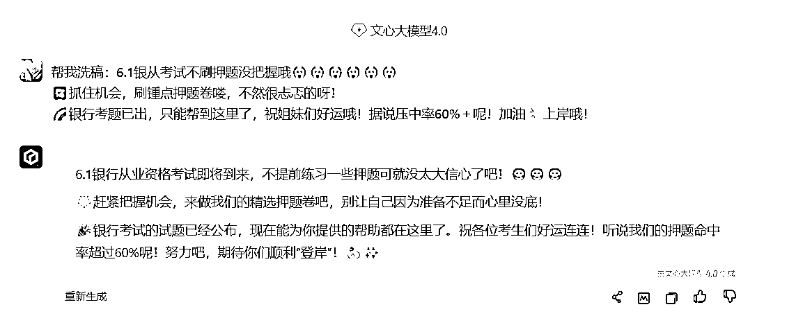
说真的，哪个AI生成的都没事，因为文案的目的就是给标题作为补充说明你有什么！
文案最下面可以带一些引导的：
比如你做的是合同资料，可以最文案最后加上个小钩子：完整🉑打茚💯，这个懂得人自懂哈，因为小红书上都是老油条了！
当然还有点：很多人的笔记内容很简单，只有标题和标签，其他没了，这样的也可以测试：
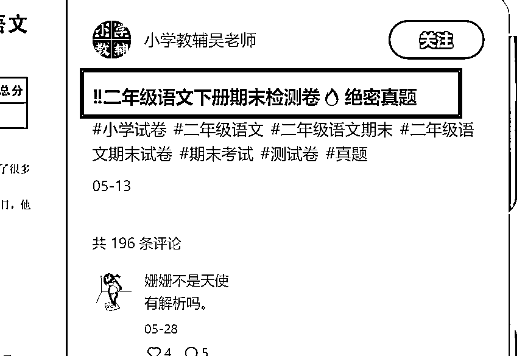
看看我们的一些案例：
东北林业大学考研初复试专业课资料
☞【左下角联系试看，满意再入】
☞【支持打印邮寄到家】
东北林业大学大学
1⃣历年真题 2⃣考研大纲
3⃣核心笔记 4⃣题库模拟题
✔专注15年专业课的收集，整理出881所考研院校、5万个考试科目的专业课初试资料，复试加试资料等。
✔考研初复试专业课资料指路明灯 ，一站式资料解决方案，真题、大纲、笔记、题库、模拟题系统。
另有多维度推荐、报录大数据支撑、精准择校、调剂。报录数据，录取人数、调剂名单、z低分、z高分、目标分、报录比，调剂去向，AI择校、智慧有据。
细节注意：如果你是AI生成的，记得查下敏感词：
A.句易网（要关注公众号）：http://www.ju1.cn/
B.零克查词（要填资料）：https://www.lingkechaci.com/
查下敏感词，有敏感词的删掉或者改谐音就行了！
6、标签写什么？
标签就是带井号的内容，如图：
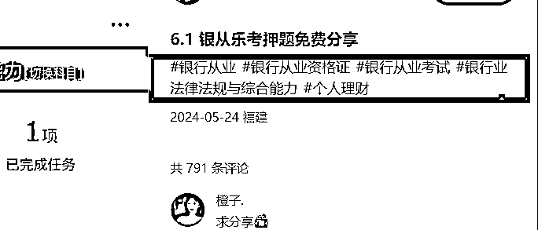
关于标签，我们可以理解为关键词，这里也是在铺关键词的。
注意：如果你匹配的标签不相关，吸引到这部分的人过来，发现牛头不对马嘴，没看几秒就退出去了，是会被系统判你这个笔记不够吸引人，当该标签吸引的人越多，越没有互动，那你的笔记就会被系统认为是不好的笔记，就更影响笔记流量了。
7、发布后需要做什么？
首先，新号发的第一篇笔记，2小时内，看看有没有收到系统恭喜你发了第一篇笔记，如果有，就是正常的。
如果没有，2小时后，再上去看看小眼睛多少，低于100就得找找问题了，可以找我交流的。
然后，发布2小时后，去搜索你笔记，看看能不能搜索出来，能的话就是正常的，因为被收录了！
最后，发布之后，尽量给自己的笔记点个赞、收藏一下，然后唱下双簧，引导别人去找你询单！
总结一点就是：小红书发布的文案，标题，话题这些，都参考同行即可，正常1天发3篇以上，不要断更，保持账号权重。
选品之后，可以发笔记测试是否出单，至少发7-15天，如果不出单就放弃！
大家注意了：
1、出单的时候，有的人 是主动拍
2、有的是 私信问你 但是对方不知道怎么拍，然后你要主动推送让他拍
3、灵活运用一下，别傻不拉几 ，别人都问了还不去引导拍单
前提的注意细节：
1、阿奇索前期有七天的免费使用，可以先免费的用七天！
2、一般是出单之后在搞阿奇索自动发货哈，没出单的话是可以先不用搞的。
3、自己电脑如果没法长期开机，可以挂服务器上，或者买短信提醒
下面是小红书的阿奇索自动发货设置，可以看下，下面图片步骤：
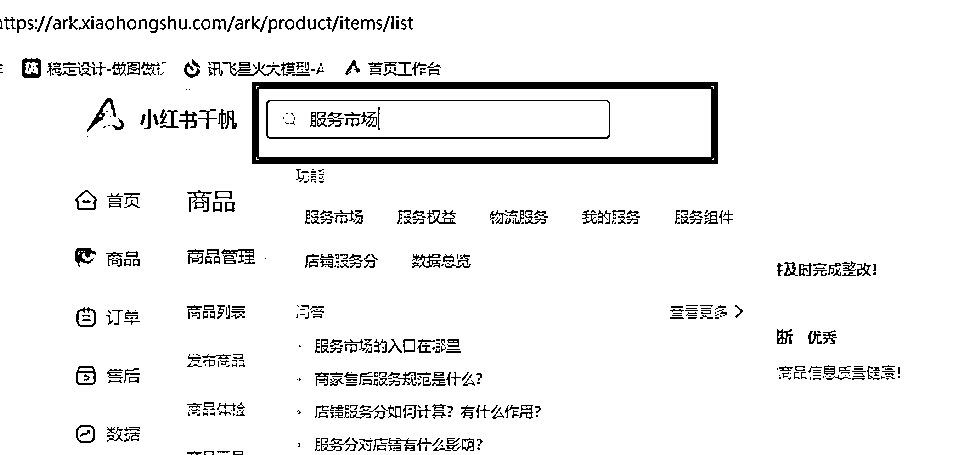
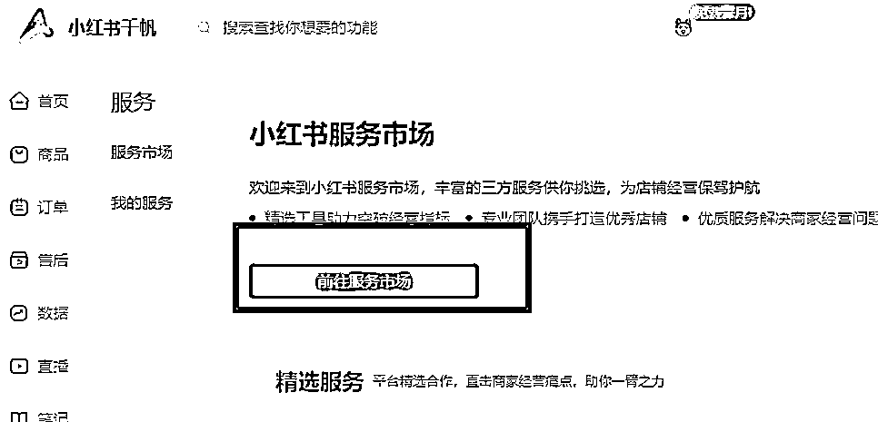
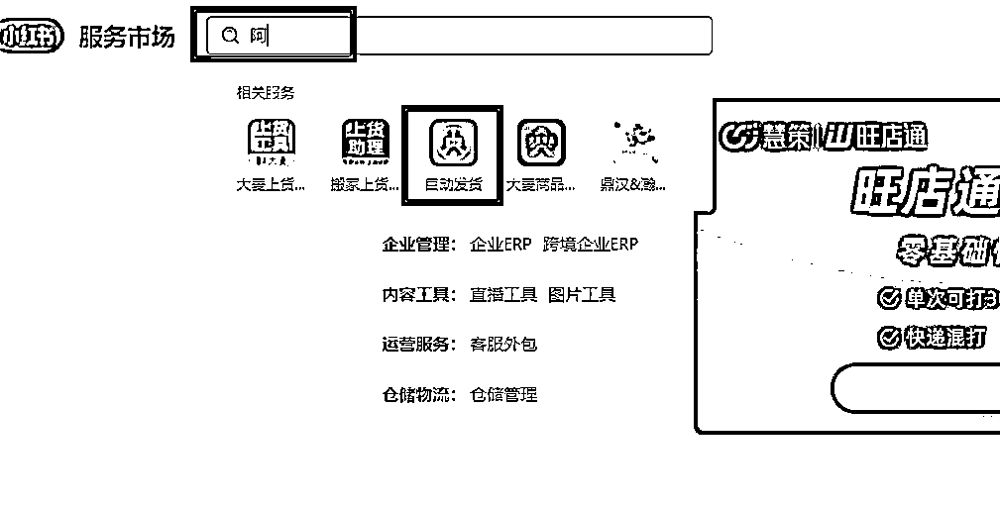
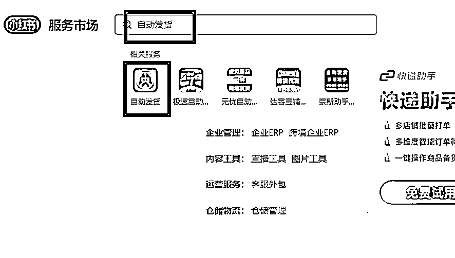
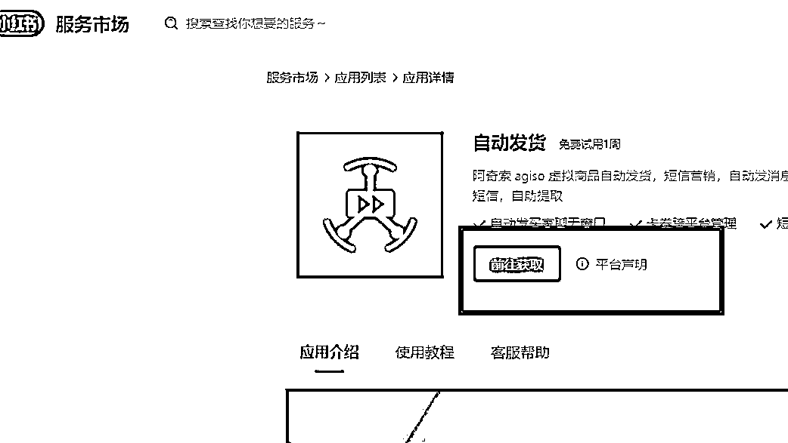
如果不知道密码，就点忘记密码重新找回
然后在账号密码登陆下！
进去之后，在扫码登陆下！
然后 商品设置
添加商品

放网盘链接
这个电脑不开，购买短信，可以通过短信自动发货给客户
完了之后 自己拍一单测试 ，是否自动发货！
关于养号，其实说白了，就是搜相关关键词，看相关内容，然后刷账号的活跃度，不要去纠结什么养号方法、养多少天，养好或养不好。我们现在最直接的方法就是边养边发，完全放养模式！
我给的养号方案也很简单，基本上满足大家的养号需求：
第一天：注册账号要用流量，注册完当天不要动
第二天：开始养号，每天刷领域垂直笔记，刷30分钟，分时段刷
第三天—第五天，保持养号，适量点赞收藏评论
第五天：改包装，人设要打造好，上午刷笔记，下午发一篇笔记测流量
领域干货笔记，当天过100小眼睛，账号没问题
以上是我们做小红书虚拟店铺项目的全部玩法，基本上按照我讲的去做都可以拿到结果，如果有问题再跟我交流就行了。
这里我再把全部流程我给大家在梳理下：小红书帐号注册、选品、养号、发笔记、测品、看是起号情况，再去开店，上架和出单并发货，然后放大
基本上大概流程，到此为止！有问题私信我交流即可！